The visible dashboard run counted 25, but the available draft ledger comparison has 3 missing truth events and 3 unexpected observed events. This page narrows the remaining reviewed-truth work to the exact disputed windows.
| Issue | Current Evidence | Review Question | Contact Strip | Single Frame |
|---|---|---|---|---|
| 001 |
App event 110.003s, estimated first seen 108.203s, runtime total 2. Draft candidate 03 is rejected. | Should the handling/placement around 108-110s count as a completed product placement in the output/resting area? | 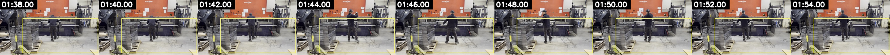 |
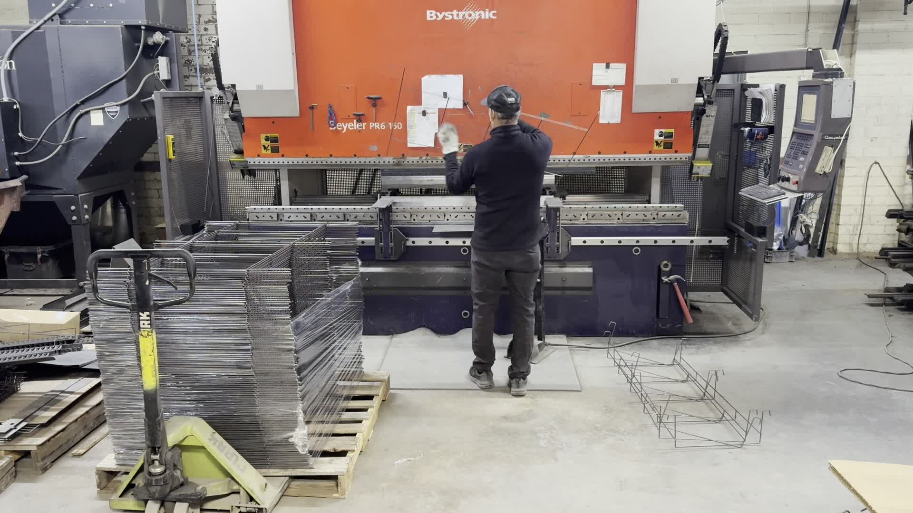 |
| 002 |
Draft truth 534.000s, truth id img2628-codex-draft-0007. No app event matched within the draft comparison tolerance. | Should the visible action around 532-534s remain a countable completed placement? | 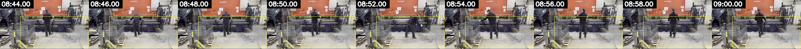 |
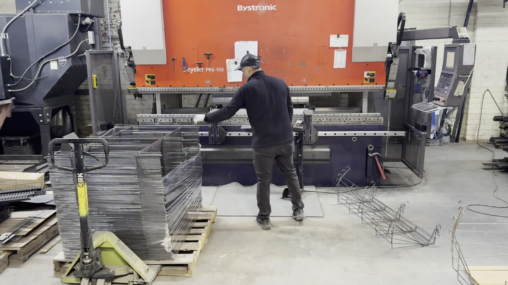 |
| 003 |
Draft truth 752.000s, truth id img2628-codex-draft-0011. App event finalized at 777.787s; estimated first seen 756.387s. | Is the app event whose track starts around 756s and finalizes at 777.787s the same physical placement as the draft truth at 752s? | 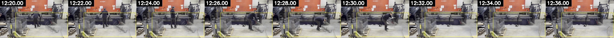 |
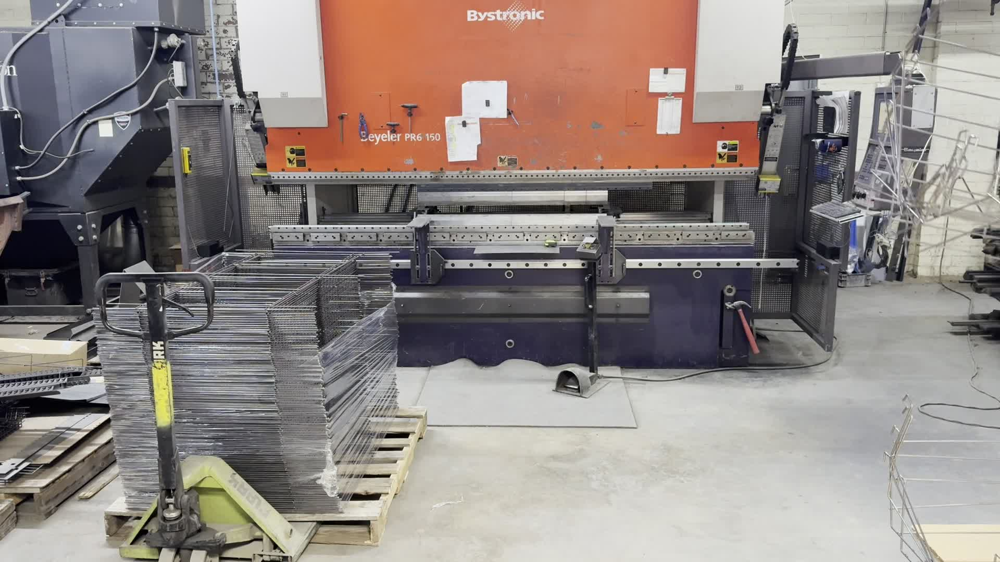 |
| 004 |
App event 777.787s, estimated first seen 756.387s, runtime total 11. Draft candidate 16 is rejected as continuation/exit motion. | Should the event finalized at 777.787s be treated as the same placement as the 752s draft event or as a separate non-countable continuation? | 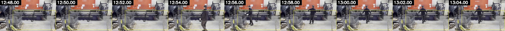 |
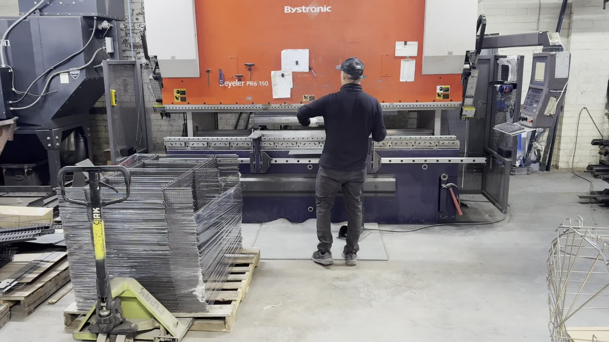 |
| 005 |
Draft truth 883.000s, truth id img2628-codex-draft-0012. No app event matched within the draft comparison tolerance. | Should the visible action around 881-883s remain a countable completed placement? | 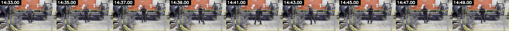 |
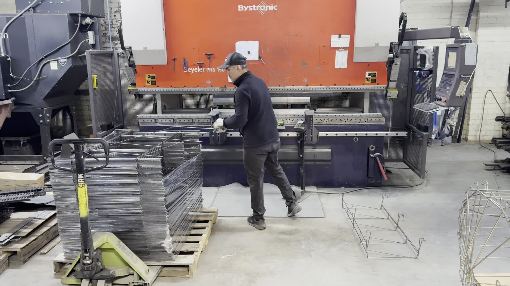 |
| 006 |
App event 1549.007s, estimated first seen 1547.207s, runtime total 23. Draft candidate 34 is rejected. | Should the handling/placement around 1547-1549s count as a completed product placement in the output/resting area? | 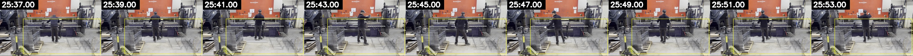 |
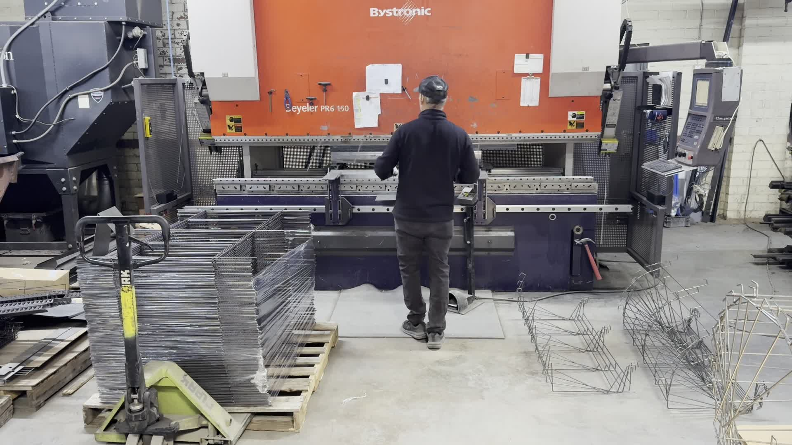 |